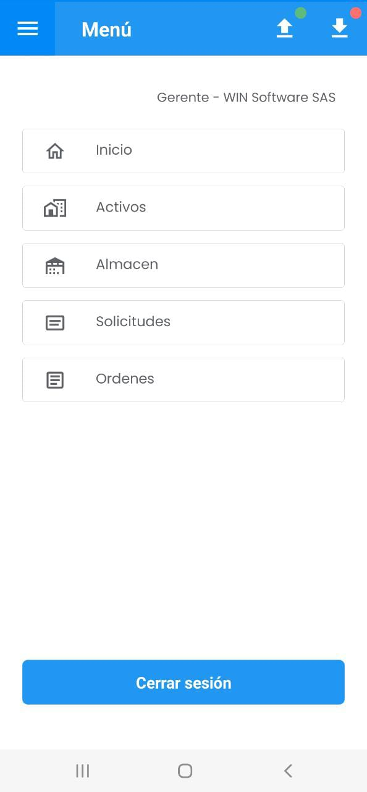
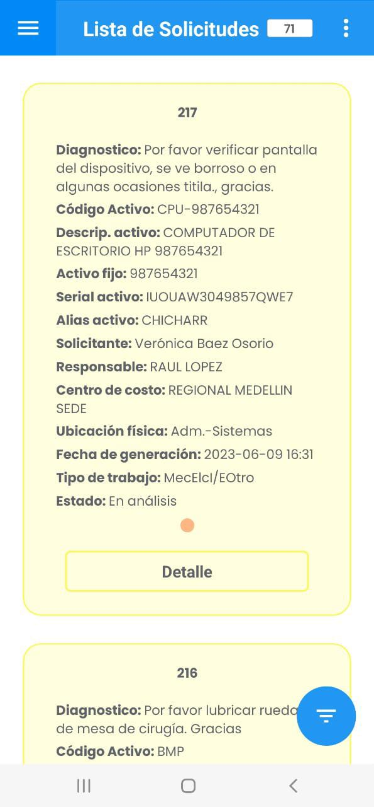
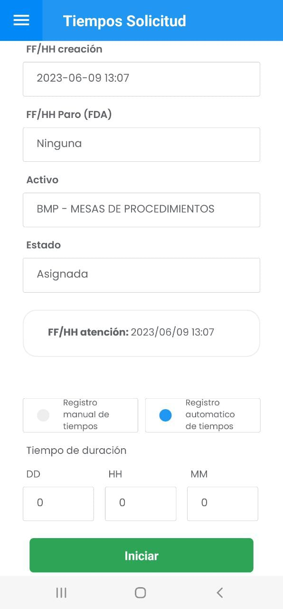
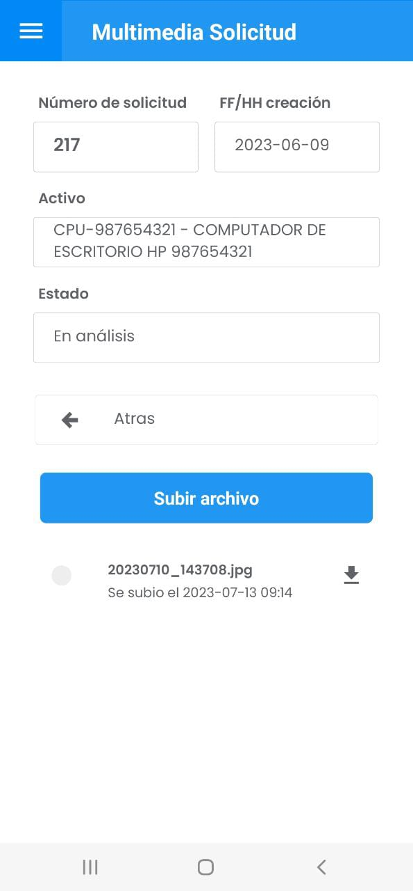
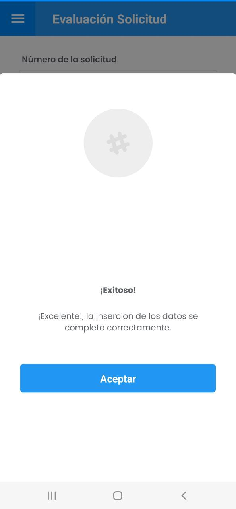
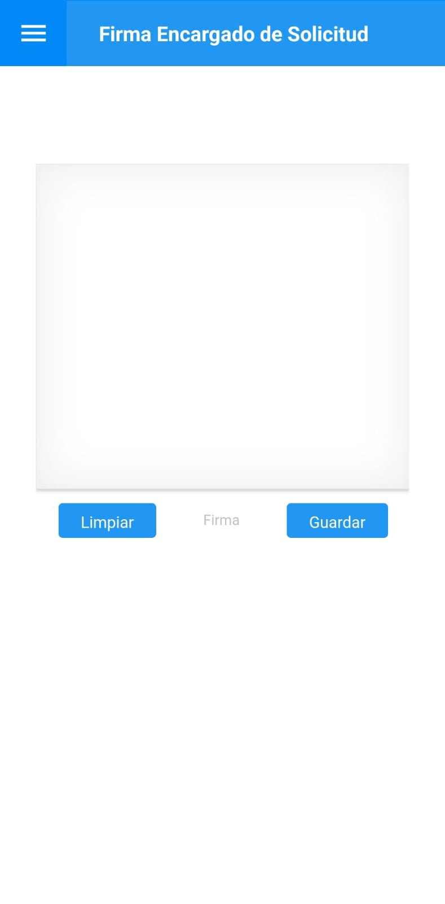
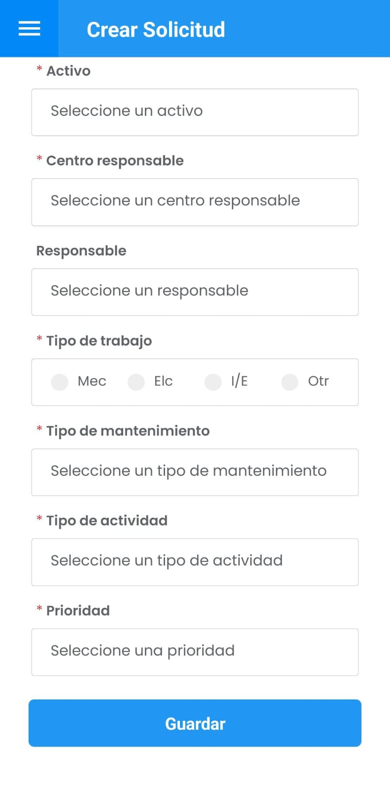

Para ir a Solicitudes de Servicio dar un toque sobre el botón Solicitudes en el menú principal:

Imagen 68. AMovil - Ir a Solicitudes
En el siguiente submenú se muestran las siguientes opciones según los permisos de usuario:

Imagen 69. AMovil - Solicitudes Submenú
Consultar Solicitudes
Para consulta y seguimiento de las Solicitudes de Servicio dirigirse al botón Consultar Solicitudes, el cual conlleva al total de las Solicitudes:

Imagen 70. AMovil - Solicitudes
Para ir al detalle del registro dar un toque en el botón Detalle como se muestra a continuación:

Imagen 71. AMovil - Solicitudes Detalle

Imagen 72. AMovil - Solicitudes Detalle
Para guardar los cambios en alguno de los campos de la Solicitud dar un toque en el botón Actualizar. Se muestra un mensaje alerta confirmando los cambios:

Imagen 73. AMovil - Solicitudes Actualizar Detalle
Para continuar dar un toque en Aceptar.
Para ingresar al submenú del Detalle de la Solicitud diríjase al botón ubicado en la parte superior derecha . Donde, se muestran las siguientes opciones relacionadas a la gestión y cierre de Solicitudes:

Imagen 74. AMovil - Ir a Submenú Gestión/Cierre Solicitudes
Actualizar tiempos
Para ingresar los tiempos de ejecución de la Solicitud dirigirse al botón y luego ingresar a . Se muestra el detalle de la Solicitud en cuestión, aquellas con estado En análisis deben tener previamente la fecha y hora de Atención, se muestra un ejemplo a continuación:

Imagen 75. AMovil - Solicitudes Actualizar tiempos
En el detalle de la Solicitud dar un toque en el botón Ingresar FF/HH de atención para ingresar automáticamente la fecha y hora:

Imagen 76. AMovil - Solicitudes FFHH Atención
Luego de registrar la FF/HH atención, se habilitan las opciones:
Nota: para ingresar los tiempos en una Solicitud sólo se puede escoger una de los opciones anteriores.
La primera consiste en ingresar las fechas de ejecución de forma manual en cada campo y hacer correcciones sobre el tiempo de duración como se muestra a continuación:

Imagen 77. AMovil - Solicitudes Registro Manual de Tiempos
Para asentar los cambios dar un toque en el botón Guardar donde se confirma la actualización y para continuar dar un toque en Aceptar:

Imagen 78. AMovil - Solicitudes Mensaje Alerta
La segunda, es para ingresar automáticamente los tiempos:

Imagen 79. AMovil - Solicitudes Ingreso Automático de Tiempos
Para dar inicio dar un toque en el botón
Iniciar, esto hará que la FF/Inicio (Fecha Inicio de Trabajos) se ingrese automáticamente. En la siguiente imagen se muestra el ingreso automático y los botones Pausar para el manejo del tiempo de duración y Finalizar para ingresar la FF/Fin (Fecha Fin de Trabajos).

Imagen 80. AMovil - Solicitudes Ingreso Automático de Tiempos
En caso de Pausar la ejecución de trabajos se prosigue con el botón Continuar y al Finalizar la ejecución, se muestra el resumen de tiempos:

Imagen 81. AMovil - Solicitudes Ingreso Automático de Tiempos

Imagen 82. AMovil - Solicitudes Ingreso Automático de Tiempos
Comentarios
Para ingresar los detalles de la ejecución o comentarios de la Solicitud dirigirse al botón y luego a como se indica a continuación:

Imagen 83. AMovil - Solicitudes Ir a Comentarios
A continuación se muestra el resumen de la Solicitud, para guardar el comentario dar un toque en el botón Guardar . Se muestra un mensaje alerta y para finalizar dar un toque en Aceptar :

Imagen 84. AMovil - Solicitudes Ingresar Comentarios

Imagen 85. AMovil - Solicitudes Mensaje Alerta Comentarios
Una vez que se guarden los comentarios, se muestra el detalle en la parte inferior el usuario que registró el comentario así:

Imagen 86. AMovil - Solicitudes Detalle Comentarios
Multimedia
Para ingresar documentos, imágenes o videos a la Solicitud dirigirse al botón y luego ir a como se indica a continuación:

Imagen 87. AMovil - Solicitudes Ir a Multimedia
A continuación se muestra un resumen de la Solicitud con las siguientes tres carpetas:

Imagen 88. AMovil - Solicitudes Multimedia
Cada una de las carpetas indican los tipos archivos permitidos en cada una. Una vez ingresada a la carpeta, es posible devolverse con el botón Atras, para cargar el archivo dar un toque en el botón Subir archivo , esto abre el explorador de archivos del teléfono móvil o estación donde se ejecute el proceso. Se ilustra un ejemplo añadiendo imágenes correspondientes a la solicitud:

Imagen 89. AMovil - Solicitudes Multimedia
Una vez se elija el archivo, se muestra en la parte inferior su nombre, como se muestra a continuación:

Imagen 90. AMovil - Solicitudes Multimedia
Para continuar, dar un toque en el botón Guardar . Se muestra el siguiente mensaje alerta:

Imagen 91. AMovil - Solicitudes Mensaje Alerta Multimedia
Para finalizar dar un toque en Aceptar . Ir a Atras para continuar agregando multimedia.
Una vez el registro tenga multimedia, se agrega un indicador de color naranja , así:

Imagen 92. AMovil - Solicitudes Indicador Multimedia
Cerrar Solicitud
Para cerrar la Solicitud de Servicio se requiere que tenga los tiempos de ejecución previamente diligenciados para cambiar el estado a Cerrada Parcial o Cerrada Ejecutada, luego, ingresar la Causa de Falla para TM (Tipo de Mantenimiento) Correctivo y luego de guardar los cambios, finalizar ingresando la firma del Responsable.
Cuando se tengan los tiempos diligenciados, diríjase al botón <span class=”iconify icon cl-white bg-blue” data-icon=mdi-dots-vertical></span></a> y luego a Cerrar Solicitud :

Imagen 93. AMovil - Solicitudes Ir a Cerrar Solicitud
A continuación se muestra el detalle del Cierre de Solicitud. Además, es posible que el técnico ejecutor indique si el Activo se entrega limpio.

Imagen 94. AMovil - Solicitudes Detalle Cierre

Imagen 95. AMovil - Solicitudes Detalle Cierre
Para ingresar la firma, se requiere que la Solicitud de Servicio tenga el estado Cerrada Ejecutada ó Cerrada Parcial. Este estado depende de la parametrización del cierre desde AMovil desde AM.

Imagen 96. AMovil - Solicitudes Cambiar Estado
Continúe asignando una causa de falla si es el caso. Se muestran las opciones de Causa de Falla (Aplicable a Solicitudes Correctivas). Se despliegan las Causas de Falla según la respectiva tabla de Infraestructura en AM:

Imagen 97. AMovil - Solicitudes Causa de Falla
Una vez diligencie el formulario del Cierre de Solicitud, debe Guardar los cambios.
Para continuar dar un toque en el botón Firma del encargado/Ejecutor. Continúe ingresando la firma en el siguiente espacio:

Imagen 98. AMovil - Solicitudes Ingresar Firma
Se puede rehacer la firma con el botón Limpiar o asentar la firma con el botón Guardar y también es posible Visualizar firma , como se muestra en el siguiente ejemplo:

Imagen 99. AMovil - Solicitudes Visualizar firma
Una vez se guarde la firma, se muestra el siguiente mensaje alerta:

Imagen 100. AMovil - Solicitudes Cierre Mensaje Alerta
Los registros que tengan la firma del Responsable Ejecutor se indican a través de un color gris , como se muestra en el siguiente ejemplo:

Imagen 101. AMovil - Solicitudes Indicador Firma
Evaluación
Para evaluar el servicio al Responsable Ejecutor se debe ir al botón y luego a Evaluación

Imagen 102. AMovil - Solicitudes Ir a Evaluación
A continuación marque su respuesta en cada pregunta, siendo:
- E: Excelente
- B: Bueno
- A: Aceptable
- D: Deficiente
- M: Malo

Imagen 103. AMovil - Solicitudes Evaluación
Continúe con el botón Guardar . Luego de actualizarse se muestra el siguiente mensaje alerta:

Imagen 104. AMovil - Solicitudes Registro Evaluación
En la parte inferior se habilita el botón Firma de quien recibe/Evalúa con el fin de registrar la firma del Solicitante:

Imagen 105. AMovil - Solicitudes Ir a Firma Solicitante
Al ingresar a la opción se muestra una ventana detalle ingreso de la firma del Solicitante:

Imagen 106. AMovil - Solicitudes Detalle Firma Solicitante
Continúe ingresando registrando la firma, a continuación se muestra una ejemplo gráfico:

Imagen 107. AMovil - Solicitudes Ejemplo Firma Solicitante
Para guardar la firma, continúe con el botón Guardar . De lo contrario, puede rehacer la firma con el botón Limpiar .
Una vez se guarde la firma, el aplicativo muestra el siguiente mensaje alerta:

Imagen 108. AMovil - Solicitudes Mensaje Alerta Firma Solicitante
Para verificar el registro de la firma, ingrese nuevamente en el botón Firma de quien recibe/Evalúa y en el detalle del ingreso de la firma continúe a la opción Visualizar Firma :

Imagen 109. AMovil - Solicitudes Visualizar Firma Solicitante
También, es posible saber que un registro posee la firma del Solicitante, a través del indicador blanco así:

Imagen 110. AMovil - Solicitudes Indicador Firma Solicitante
Firma Masiva
Esta opción se sugiere cuando un técnico responsable requiere registrar la firma tanto de él como de la persona que recibe de forma masiva o para un subgrupo de Solicitudes.
Es de considerar que para ejecutar esta transacción las Solicitudes de Servicio requieren tener diligenciados los tiempos de ejecución y deben estar cerradas.
Desde AM se puede parametrizar el Permitir Firma de Recibido sin Evaluación en AMovil.
Es posible hacer el ingreso de la firma del Responsable Ejecutor Responsable y también de la persona o solicitante que recibe.
Para ello se sugiere usar la función Subgrupo. A continuación se muestra un ejemplo del paso a paso:
Una vez ingrese a la opción Consultar Solicitudes diríjase a la opción Subgrupo mostrado a continuación:

_Imagen 111. AMovil - Consulta Solicitudes _
Haga la búsqueda por medio de los siguientes filtros en la opción </span>Seleccione un filtro:

Imagen 112. AMovil - Subgrupo Solicitudes
Para el ejemplo se usa el filtro Responsable, esta opción lista todos los Responsables ejecutores de la tabla de Terceros en AM, además, puede facilitar la búsqueda con el botón Buscar un Responsable e introducir una parte del nombre, una vez lo seleccione se muestra el campo diligenciado, como se indica a continuación:

Imagen 113. AMovil - Subgrupo Solicitudes
Continúe con el botón Aceptar ubicado en la parte inferior.
Luego, visualice el resultado del Subgrupo en la parte superior con el botón 3:

Imagen 114. AMovil - Subgrupo Solicitudes
Diríjase al botón ubicado en la parte superior derecha :

Imagen 115. AMovil - Ir a Firma Masiva
Seguidamente elija la opción Firma Masiva De Quien Recibe :

Imagen 116. AMovil - Firma Masiva Recibido Satisfacción
Para ingresar la firma, primero ingrese el nombre de quien recibe o evalúa en el primer recuadro de la parte superior, continúe dibujando la firma en el siguiente recuadro. Puede rehacerla con el botón Limpiar o asentarla con el botón Guardar .

Imagen 117. AMovil - Firma Masiva Recibido Satisfacción
Al guardar la firma se muestra un mensaje alerta exitoso de ingreso. Continúe dando un toque al botón Aceptar .

Imagen 118. AMovil - Firma Masiva Recibido Satisfacción
Al finalizar los registros quedan con el indicador blanco:

Imagen 119. AMovil - Firma Masiva Recibido Satisfacción
Diríjase al botón ubicado en la parte superior derecha :
Imagen 120. AMovil - Ir a Firma Encargado Solicitud
Seguidamente elija la opción Firma Masiva Del Técnico Responsable :

Imagen 121. AMovil - Ir a Firma Encargado Solicitud
Continúe dibujando la firma en el siguiente recuadro. Puede rehacerla con el botón Limpiar o asentarla con el botón Guardar .

Imagen 122. AMovil - Firma Masiva Encargado Solicitud
Al guardar la firma se muestra un mensaje alerta exitoso de ingreso. Continúe dando un toque al botón Aceptar .

Imagen 123. AMovil - Firma Masiva Mensaje Alerta
Al finalizar los registros quedan con el indicador gris :

Imagen 124. AMovil - Firma Masiva Encargado Solicitud Indicador
Crear Solicitud
Para crear un nuevo registro diríjase al botón Crear Solicitud , el cual conlleva al siguiente formulario:

Imagen 125. AMovil - Submenú Ir a Crear Solicitud

Imagen 126. AMovil - Formulario Solicitud

Imagen 127. AMovil - Formulario Crear Solicitud
Todos los campos son obligatorios, se debe contar con los permisos para visualizar la Órden creada.
A continuación se da una breve explicación de cada campo:
Diagnóstico: Es un texto corto por medio del cual se indica la labor a a solicitar. Debe ser conciso y no dar lugar a ambigüedades.
Solicitante: Es la persona que solicita la labor a realizar, puede ser escrito manualmente o ser un RI(Un responsable interno que está registrado en la tabla de Infraestructura Terceros).
Activo: Es el objeto de mantenimiento.
Centro Responsable: Es el grupo ejecutor de mantenimiento a cargo de la labor a realizar.
Responsable: Es la persona natural o jurídica principal a ejecutar la labor de mantenimiento.
Tipo de Trabajo: Indica los Tipos de Trabajo que se realizan en la SS. Es posible definir más de un Tipo de Trabajo para una SS.
Tipo de mantenimiento: Este campo indica el Tipo de Mantenimiento a realizar en la SS. Toda SS debe poseer uno. Si en la SS se va a registrar un trabajo que no corresponde a una labor de mantenimiento, en este campo se elige Otro” y a continuación, en el tipo de “Actividad” se especifica detalladamente, el tipo de labor.
Tipo de actividad: Aquí se establece el Tipo de Actividad a realizar en la OT. Este campo trabaja en coordinación con el anterior (Tipo de Mantenimiento). Si en el campo anterior se ha hecho la selección de un valor diferente de “Otro”, en el campo Tipo de Actividad se debe seleccionar un valor que defina consistentemente la labor a ejecutar.
Prioridad: Es la prioridad que tiene la SS. Están disponibles la prioridad Baja, Media y Alta.
Una vez diligenciado completamente el formulario contínue con el botón Guardar, el aplicativo muestra el siguiente mensaje alerta y contínue con el botón Aceptar .

Imagen 128. AMovil - Crear Solicitud Mensaje Alerta
Para visualizar la SS creada no debe tener subgrupos activos:

Imagen 129. AMovil - Crear Solicitud